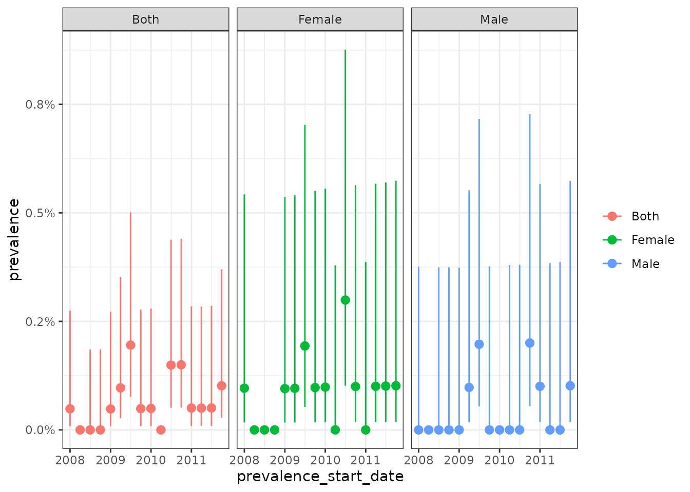
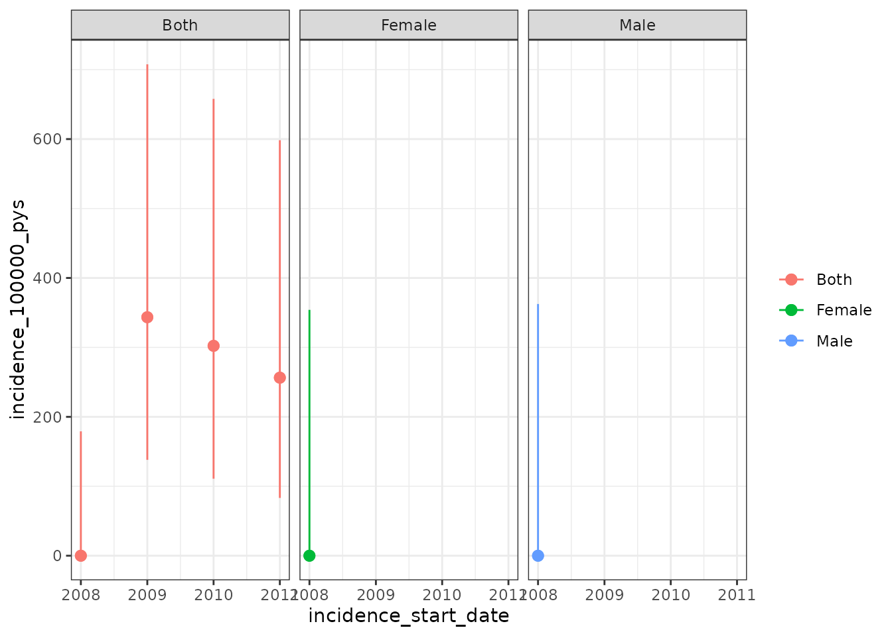

Introduction to IncidencePrevalence
a01_Introduction_to_IncidencePrevalence.RmdTo do a study of incidence and prevalence, there are four core analytics functions from this package that you would interact with
-
generateDenominatorCohortSet()- this function will identify a set of denominator populations that can be used for calculations of prevalence and incidence -
estimatePointPrevalence()- this function will estimate point prevalence for outcomes among denominator populations -
estimatePeriodPrevalence()- this function will estimate period prevalence for outcomes among denominator populations -
estimateIncidence()- this function will estimate incidence rates for outcomes among denominator populations
Below, we show an example analysis to provide an broad overview of how this functionality provided by the IncidencePrevalence package can be used. More context and further examples for each of these functions are provided in later vignettes.
First, let’s load relevant libraries.
The IncidencePrevalence package works with data mapped to the OMOP CDM and we will first need to connect to a database, after which we can use the CDMConnector package to represent our mapped data as a single R object. This could like something like:
con <- DBI::dbConnect(RPostgres::Postgres(),
dbname = Sys.getenv("CDM5_POSTGRESQL_DBNAME"),
host = Sys.getenv("CDM5_POSTGRESQL_HOST"),
user = Sys.getenv("CDM5_POSTGRESQL_USER"),
password = Sys.getenv("CDM5_POSTGRESQL_PASSWORD"))
cdm <- CDMConnector::cdm_from_con(con,
cdm_schema = Sys.getenv("CDM5_POSTGRESQL_CDM_SCHEMA"))For this example though we´ll generate 50,000 hypothetical patients
using the mockIncidencePrevalenceRef() function.
cdm <- mockIncidencePrevalenceRef(
sampleSize = 50000,
outPre = 0.5
)Importantly this example data already includes an outcome cohort. In practice, study-specific outcome cohorts of interest will need to be created. If the outcome cohorts are defined as JSON, we can use the CDMConnector package to read in and generate the cohorts.
outcome_cohorts <- CDMConnector::readCohortSet(here::here("outcome_cohorts"))
cdm <- CDMConnector::generateCohortSet(cdm,
outcome_cohorts,
cohortTableName = outcome_table)Once we have a connection to the database set-up, we can use the
generateDenominatorCohortSet() to identify a denominator
cohort to use later when calculating incidence and prevalence. In this
case we identify three denominator cohorts one with males, one with
females, and one with both males and females included. For each of these
cohorts only those aged between 18 and 65 from 2008 to 2012, and who had
365 days of prior history available are included.
cdm$denominator <- generateDenominatorCohortSet(
cdm = cdm,
startDate = as.Date("2008-01-01"),
endDate = as.Date("2012-01-01"),
ageGroup = list(c(18, 65)),
sex = c("Male", "Female", "Both"),
daysPriorHistory = 365
)We can see that each of our denominator cohorts is in the format of an OMOP CDM cohort:
cdm$denominator %>%
glimpse()
#> Rows: ??
#> Columns: 4
#> Database: DuckDB 0.6.2-dev1166 [unknown@Linux 5.15.0-1031-azure:R 4.2.2/:memory:]
#> $ cohort_definition_id <int> 1, 1, 1, 1, 1, 1, 1, 1, 1, 1, 1, 1, 1, 1, 1, 1, 1…
#> $ subject_id <chr> "2", "13", "29", "46", "88", "180", "215", "287",…
#> $ cohort_start_date <date> 2008-01-01, 2008-05-28, 2011-10-14, 2008-01-01, …
#> $ cohort_end_date <date> 2008-08-03, 2009-12-29, 2012-01-01, 2008-05-05, …We can also see the settings associated with each cohort:
settings(cdm$denominator)
#> # A tibble: 3 × 8
#> cohort_definitio…¹ age_g…² sex days_…³ start_date end_date strat…⁴ strat…⁵
#> <int> <chr> <chr> <dbl> <date> <date> <lgl> <lgl>
#> 1 1 18;65 Male 365 2008-01-01 2012-01-01 NA NA
#> 2 2 18;65 Fema… 365 2008-01-01 2012-01-01 NA NA
#> 3 3 18;65 Both 365 2008-01-01 2012-01-01 NA NA
#> # … with abbreviated variable names ¹cohort_definition_id, ²age_group,
#> # ³days_prior_history, ⁴strata_cohort_definition_id, ⁵strata_cohort_nameAnd we can also see the count for each cohort
cohortCount(cdm$denominator)
#> # A tibble: 3 × 2
#> cohort_definition_id n
#> <int> <dbl>
#> 1 1 3021
#> 2 2 3177
#> 3 3 6198Now that we have our denominator cohorts, and using the outcome
cohort that was also generated by the
mockIncidencePrevalenceRef() function, we can estimate
prevalence for each using the estimatePointPrevalence()
function. Here we calculate point prevalence on a yearly basis.
prev <- estimatePeriodPrevalence(
cdm = cdm,
denominatorTable = "denominator",
outcomeTable = "outcome",
interval = "quarters",
minCellCount = 0
)
prev %>%
glimpse()
#> Rows: 48
#> Columns: 10
#> $ analysis_id <chr> "1", "1", "1", "1", "1", "1", "1", "1", "1", "1"…
#> $ prevalence_start_date <date> 2008-01-01, 2008-04-01, 2008-07-01, 2008-10-01,…
#> $ prevalence_end_date <date> 2008-03-31, 2008-06-30, 2008-09-30, 2008-12-31,…
#> $ n_cases <int> 29, 43, 26, 37, 38, 34, 37, 37, 41, 39, 35, 40, …
#> $ n_population <int> 640, 633, 661, 668, 698, 710, 682, 666, 664, 665…
#> $ prevalence <dbl> 0.04531250, 0.06793049, 0.03933434, 0.05538922, …
#> $ prevalence_95CI_lower <dbl> 0.03173229, 0.05082084, 0.02698210, 0.04044927, …
#> $ prevalence_95CI_upper <dbl> 0.06431847, 0.09025267, 0.05701004, 0.07541357, …
#> $ cohort_obscured <chr> "FALSE", "FALSE", "FALSE", "FALSE", "FALSE", "FA…
#> $ result_obscured <chr> "FALSE", "FALSE", "FALSE", "FALSE", "FALSE", "FA…
Similarly we can use the estimateIncidence() function to
estimate incidence rates. Here we annual incidence rates, with 180 days
used for outcome washout windows.
inc <- estimateIncidence(
cdm = cdm,
denominatorTable = "denominator",
outcomeTable = "outcome",
interval = c("Years"),
outcomeWashout = 180
)
inc %>%
glimpse()
#> Rows: 12
#> Columns: 12
#> $ analysis_id <chr> "1", "1", "1", "1", "2", "2", "2", "2"…
#> $ n_persons <int> 1044, 1052, 1031, 1089, 1101, 1188, 11…
#> $ person_days <dbl> 159970, 161590, 157191, 172517, 170400…
#> $ n_events <int> 125, 133, 144, 162, 126, 149, 146, 116…
#> $ incidence_start_date <date> 2008-01-01, 2009-01-01, 2010-01-01, 2…
#> $ incidence_end_date <date> 2008-12-31, 2009-12-31, 2010-12-31, 2…
#> $ person_years <dbl> 437.9740, 442.4093, 430.3655, 472.3258…
#> $ incidence_100000_pys <dbl> 28540.51, 30062.66, 33459.93, 34298.36…
#> $ incidence_100000_pys_95CI_lower <dbl> 23756.87, 25170.84, 28218.21, 29220.08…
#> $ incidence_100000_pys_95CI_upper <dbl> 34004.73, 35627.65, 39392.91, 40005.53…
#> $ cohort_obscured <chr> "FALSE", "FALSE", "FALSE", "FALSE", "F…
#> $ result_obscured <chr> "FALSE", "FALSE", "FALSE", "FALSE", "F…
Once we have our estimates, we can use
gatherIncidencePrevalenceResults() to bring together the
results, adding outcome names and the database name to the output.
study_results <- gatherIncidencePrevalenceResults(cdm = cdm,
resultList = list(inc, prev),
databaseName = "example_data")
dplyr::glimpse(study_results$incidence_estimates)
#> Rows: 12
#> Columns: 29
#> $ result_id <int> 1, 1, 1, 1, 1, 1, 1, 1, 1, 1, …
#> $ analysis_id <chr> "1", "1", "1", "1", "2", "2", …
#> $ n_persons <int> 1044, 1052, 1031, 1089, 1101, …
#> $ person_days <dbl> 159970, 161590, 157191, 172517…
#> $ n_events <int> 125, 133, 144, 162, 126, 149, …
#> $ incidence_start_date <date> 2008-01-01, 2009-01-01, 2010-…
#> $ incidence_end_date <date> 2008-12-31, 2009-12-31, 2010-…
#> $ person_years <dbl> 437.9740, 442.4093, 430.3655, …
#> $ incidence_100000_pys <dbl> 28540.51, 30062.66, 33459.93, …
#> $ incidence_100000_pys_95CI_lower <dbl> 23756.87, 25170.84, 28218.21, …
#> $ incidence_100000_pys_95CI_upper <dbl> 34004.73, 35627.65, 39392.91, …
#> $ cohort_obscured <chr> "FALSE", "FALSE", "FALSE", "FA…
#> $ result_obscured <chr> "FALSE", "FALSE", "FALSE", "FA…
#> $ outcome_cohort_id <int> 1, 1, 1, 1, 1, 1, 1, 1, 1, 1, …
#> $ outcome_cohort_name <lgl> NA, NA, NA, NA, NA, NA, NA, NA…
#> $ analysis_outcome_washout <dbl> 180, 180, 180, 180, 180, 180, …
#> $ analysis_repeated_events <lgl> FALSE, FALSE, FALSE, FALSE, FA…
#> $ analysis_interval <chr> "years", "years", "years", "ye…
#> $ analysis_complete_database_intervals <lgl> TRUE, TRUE, TRUE, TRUE, TRUE, …
#> $ denominator_cohort_id <int> 1, 1, 1, 1, 2, 2, 2, 2, 3, 3, …
#> $ analysis_min_cell_count <dbl> 5, 5, 5, 5, 5, 5, 5, 5, 5, 5, …
#> $ denominator_age_group <chr> "18;65", "18;65", "18;65", "18…
#> $ denominator_sex <chr> "Male", "Male", "Male", "Male"…
#> $ denominator_days_prior_history <dbl> 365, 365, 365, 365, 365, 365, …
#> $ denominator_start_date <date> 2008-01-01, 2008-01-01, 2008-…
#> $ denominator_end_date <date> 2012-01-01, 2012-01-01, 2012-…
#> $ denominator_strata_cohort_definition_id <lgl> NA, NA, NA, NA, NA, NA, NA, NA…
#> $ denominator_strata_cohort_name <lgl> NA, NA, NA, NA, NA, NA, NA, NA…
#> $ database_name <chr> "example_data", "example_data"…
dplyr::glimpse(study_results$prevalence_estimates)
#> Rows: 48
#> Columns: 29
#> $ result_id <int> 2, 2, 2, 2, 2, 2, 2, 2, 2, 2, …
#> $ analysis_id <chr> "1", "1", "1", "1", "1", "1", …
#> $ prevalence_start_date <date> 2008-01-01, 2008-04-01, 2008-…
#> $ prevalence_end_date <date> 2008-03-31, 2008-06-30, 2008-…
#> $ n_cases <int> 29, 43, 26, 37, 38, 34, 37, 37…
#> $ n_population <int> 640, 633, 661, 668, 698, 710, …
#> $ prevalence <dbl> 0.04531250, 0.06793049, 0.0393…
#> $ prevalence_95CI_lower <dbl> 0.03173229, 0.05082084, 0.0269…
#> $ prevalence_95CI_upper <dbl> 0.06431847, 0.09025267, 0.0570…
#> $ cohort_obscured <chr> "FALSE", "FALSE", "FALSE", "FA…
#> $ result_obscured <chr> "FALSE", "FALSE", "FALSE", "FA…
#> $ outcome_cohort_id <int> 1, 1, 1, 1, 1, 1, 1, 1, 1, 1, …
#> $ outcome_cohort_name <lgl> NA, NA, NA, NA, NA, NA, NA, NA…
#> $ analysis_outcome_lookback_days <dbl> 0, 0, 0, 0, 0, 0, 0, 0, 0, 0, …
#> $ analysis_type <chr> "period", "period", "period", …
#> $ analysis_interval <chr> "quarters", "quarters", "quart…
#> $ analysis_complete_database_intervals <lgl> TRUE, TRUE, TRUE, TRUE, TRUE, …
#> $ analysis_time_point <chr> "start", "start", "start", "st…
#> $ analysis_full_contribution <lgl> FALSE, FALSE, FALSE, FALSE, FA…
#> $ analysis_min_cell_count <dbl> 0, 0, 0, 0, 0, 0, 0, 0, 0, 0, …
#> $ denominator_cohort_id <int> 1, 1, 1, 1, 1, 1, 1, 1, 1, 1, …
#> $ denominator_age_group <chr> "18;65", "18;65", "18;65", "18…
#> $ denominator_sex <chr> "Male", "Male", "Male", "Male"…
#> $ denominator_days_prior_history <dbl> 365, 365, 365, 365, 365, 365, …
#> $ denominator_start_date <date> 2008-01-01, 2008-01-01, 2008-…
#> $ denominator_end_date <date> 2012-01-01, 2012-01-01, 2012-…
#> $ denominator_strata_cohort_definition_id <lgl> NA, NA, NA, NA, NA, NA, NA, NA…
#> $ denominator_strata_cohort_name <lgl> NA, NA, NA, NA, NA, NA, NA, NA…
#> $ database_name <chr> "example_data", "example_data"…After gathering results, we can export them as CSVs in a zip folder
using the exportIncidencePrevalenceResults() function.
exportIncidencePrevalenceResults(result = study_results,
zipName = "example_results",
outputFolder = here::here())